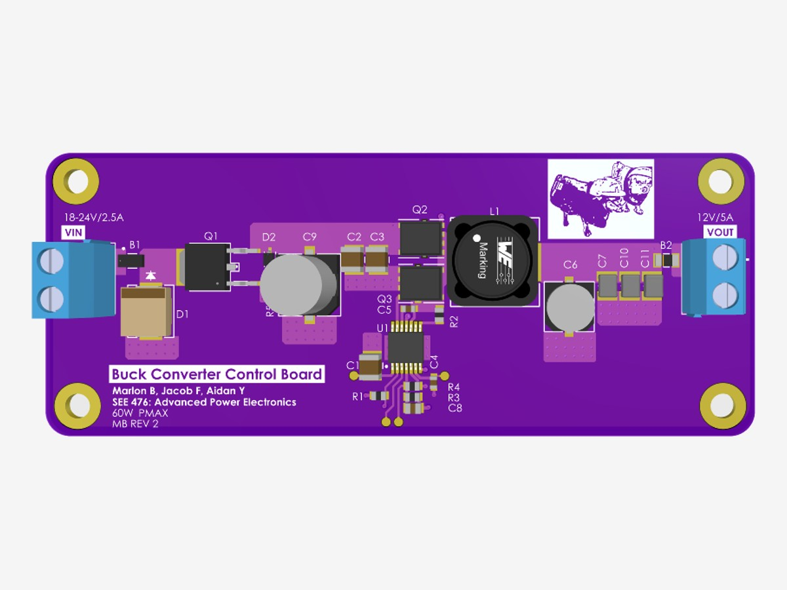
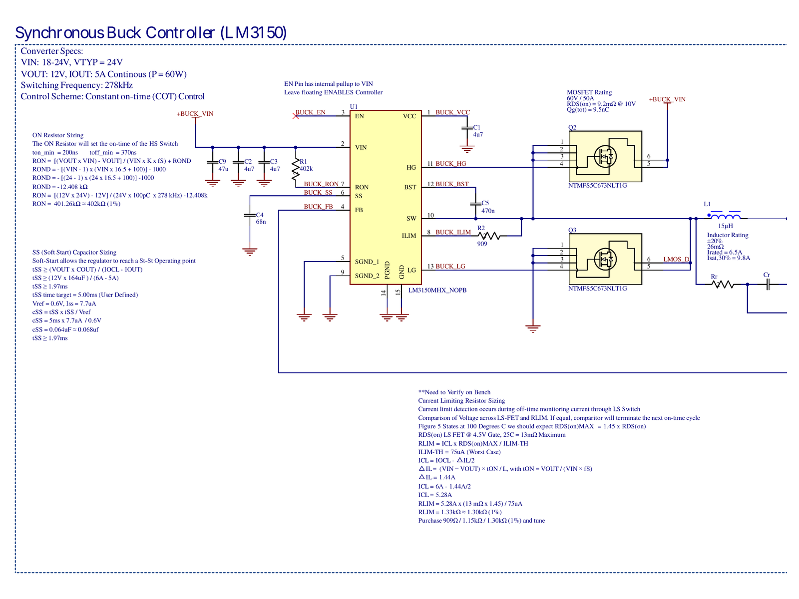
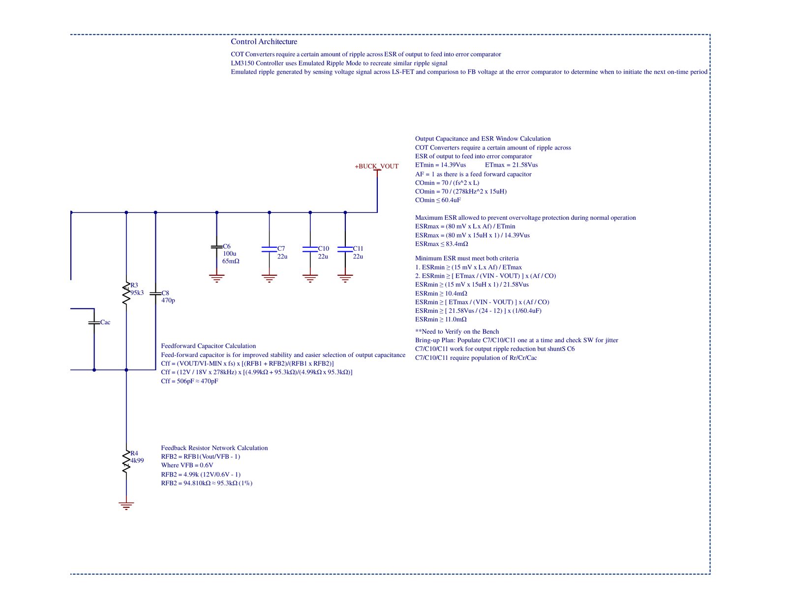
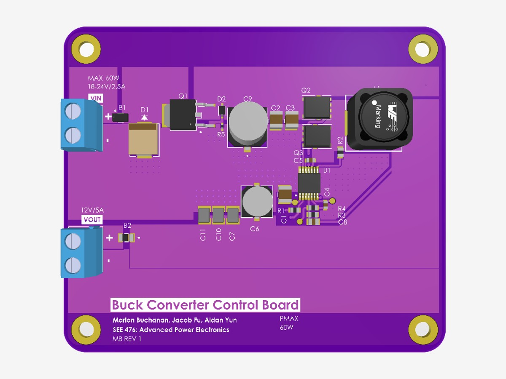
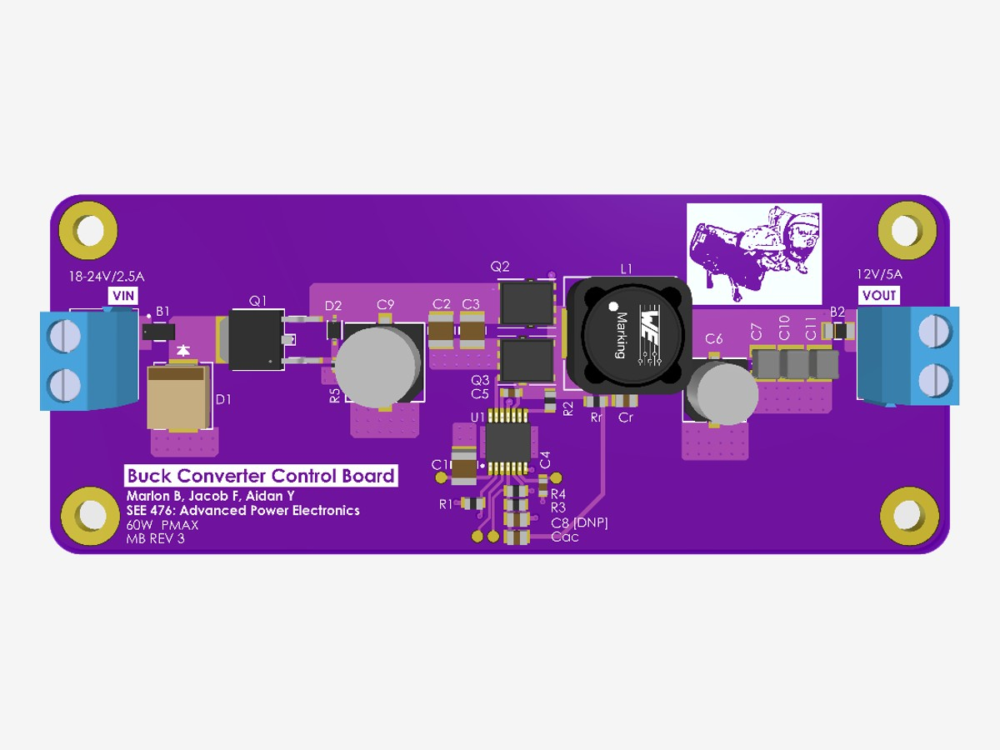
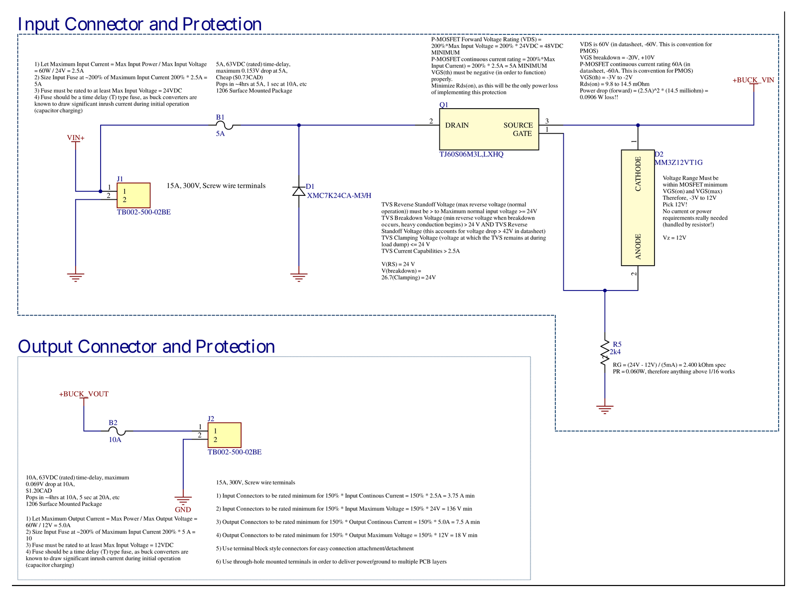
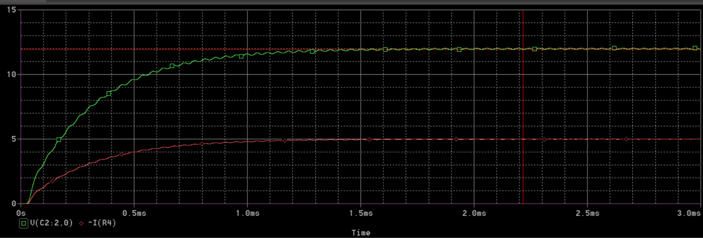
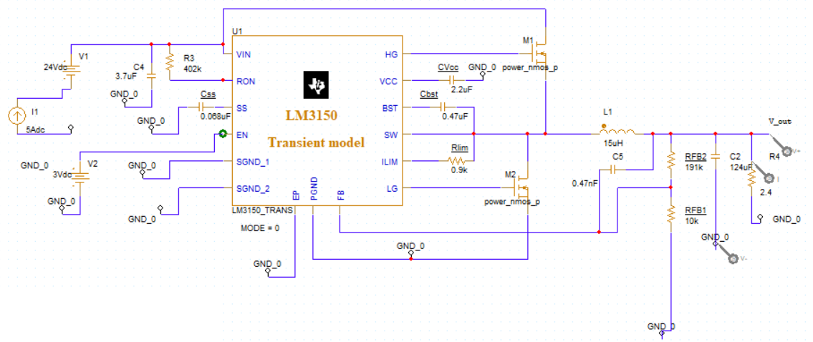
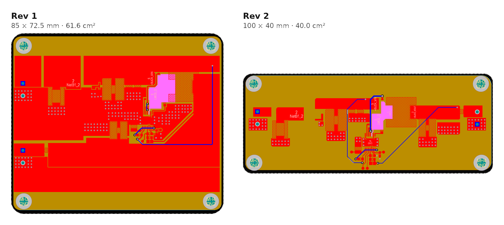
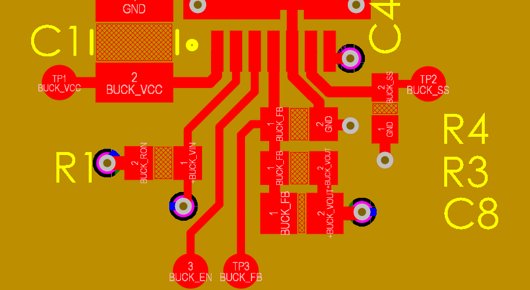

60 W Synchronous Buck Converter
SEE 476 Advanced Power Electronics: 24 V to 12 V at 5 A with the TI LM3150
A 60 W synchronous buck converter that steps a 24 V bus down to 12 V at 5 A, designed for SEE 476 (Advanced Power Electronics) at SFU. It's built around TI's LM3150, a constant-on-time controller that drives two external MOSFETs, so we sized and laid out the entire power stage ourselves instead of relying on an integrated module.
I owned the LM3150 schematic, the component-sizing calculator, and all three PCB layouts. All three revisions are fabricated, and we're populating Rev 1 and Rev 2 to compare the two layouts on the bench. Testing status ↓
- Role LM3150 schematic, sizing calculator, PCB layout (3 revisions)
- Team Jacob Fu (protection, connectors, calculator verification), Aidan Yun (PSpice model)
- When Fall 2026
- Status All revisions fabricated; populating Rev 1 and Rev 2 for testing
- Tools Altium Designer, Excel, PSpice for TI








Highlights
- Built a component-sizing calculator from the LM3150 datasheet's design procedure, with a PASS/FAIL check on every constraint. We validated it against the datasheet's own worked example (27 of 31 values match; the 4 mismatches trace to inconsistencies in the datasheet itself) and cross-checked it against TI's own LM3150 calculator
- Compared three MOSFETs in the calculator and picked the one with the highest RDS(on): at 24 V and 278 kHz, switching and gate-drive losses dominate, so it cut estimated FET losses from 1.15 W to 0.50 W, about a 1-point efficiency gain at 60 W
- Redesigned the layout from TI's reference into a straight-line, 4-layer board with 35% less area (85 × 72.5 mm to 100 × 40 mm), a smaller switch node, and tighter input and output current loops
- Fabricated both layouts so they can be compared on the bench with identical parts, plus a third revision with do-not-populate footprints for an alternate ripple-injection network
- Sized the output capacitor bank inside the controller's ESR window, and annotated the schematic with the design math behind every value
Design Specifications
| Input | 18–24 V (24 V nominal) |
|---|---|
| Output | 12 V at 5 A continuous (60 W) |
| Controller | TI LM3150: constant on-time (COT) with emulated ripple mode |
| Switching frequency | 278 kHz, set by RON = 402 kΩ |
| MOSFETs | 2× onsemi NTMFS5C673NL (60 V) |
| Inductor | 15 µH, 6.5 A rated, 9.8 A saturation; 1.44 A ripple at 24 V |
| Output capacitors | 100 µF polymer (65 mΩ ESR) + 3× 22 µF ceramic |
| Current limit | 6 A target, valley-sensed through the low-side FET's RDS(on) |
| Soft-start | 5.3 ms (68 nF) |
| Protection | Input and output fuses, input TVS, P-channel MOSFET reverse-polarity protection |
| PCB | 4 layers (signal / GND / GND / signal), ground pours on both inner layers |
| Board size | Rev 1: 85 × 72.5 mm · Rev 2/3: 100 × 40 mm (35% less area, 1.5 W/cm²) |
Design Process
1. Choosing the controller
We started by comparing integrated buck ICs (TI LMQ61460, Vishay SiC462, MPS MPQ4436) on input headroom, package, and documentation. At our instructor's suggestion, we switched to a controller with external MOSFETs. That meant designing the power stage ourselves, and being able to probe and analyze every part of it.
We chose TI's LM3150: a 6–42 V synchronous controller with a PSpice model, an evaluation board, and a full design procedure. It uses constant-on-time control, which responds fast but needs some ripple at the feedback pin to decide when to switch. The LM3150 emulates that ripple by sensing the low-side FET, which relaxes the output capacitor ESR requirement but doesn't remove it.
2. A sizing calculator we could trust
I turned the datasheet's design procedure into a spreadsheet: design inputs at the top, every value computed from its datasheet equation, and a PASS/FAIL check on each constraint, including frequency limits, the ESR window, the gate-charge budget, FET power, and soft-start time.
Before trusting it, Jacob and I made it reproduce the datasheet's worked example. 27 of 31 values matched, and the four mismatches came from the datasheet itself. For example, its printed current-limit value can't be reproduced from its own equations. Aidan also cross-checked our results against TI's own LM3150 Excel calculator. The checking caught real errors before ordering, such as a feed-forward capacitor formula that gave about 11 nF instead of about 500 pF.
3. Picking MOSFETs by where the loss actually is
I compared three MOSFETs in the calculator. The intuitive pick is the lowest RDS(on), but at 24 V and 278 kHz the high-side FET's loss is dominated by switching, which scales with gate charge. The onsemi NTMFS5C673NL has about four times the on-resistance of the lowest-resistance candidate, but a gate-drain charge of 0.8 nC against 7 nC. Its high-side switching loss came out about 9 times lower (0.08 W vs 0.72 W).
Gate charge costs twice on this controller: the LM3150 powers its gate drivers from a linear regulator off the 24 V input, so every nanocoulomb switched also burns VIN × Qg × fs. Counting both FETs and the gate drive, the NTMFS5C673NL totals about 0.50 W, against 1.15 W and 1.68 W for the other two candidates.
4. Living inside the ESR window
COT control puts the output capacitors in a narrow window. Too little ESR and the loop doesn't see enough ripple. Too much and the ripple trips the controller's overvoltage protection. Our first bank, two 82 µF polymer capacitors in parallel, landed at 14 mΩ, right at the bottom edge. I replaced it with a single 100 µF polymer capacitor whose 65 mΩ ESR sits mid-window, plus three 22 µF ceramics for capacitance.
The catch is that ceramics in parallel shunt the ripple away from the polymer's ESR. With all three fitted, the loop sees an effective ESR of only a few milliohms. So the ceramics are optional on the bench: bring-up starts with the polymer alone, and ceramics get added one at a time while the switch node is watched for jitter.




5. Simulating before building
Aidan built a transient model of the converter in PSpice, using TI's LM3150 model with near-final component values: the same RON, inductor, feed-forward capacitor, and current-limit setting as the board. The feedback divider is scaled to 191 kΩ / 10 kΩ, which has the same ratio as the board's 95.3 kΩ / 4.99 kΩ and sets the same output. With 24 V in and a 2.4 Ω load, the output settles at 11.94 V and the load draws 4.98 A, within about 1% of the 12 V, 5 A target. That confirmed the on-time, feedback, and power-stage values worked together before we committed to a board.
6. Layout: from reference design to my own
All three revisions are 4-layer boards (signal / ground / ground / signal) with copper pours on both inner layers. Rev 1 followed the placement of TI's LM3150 evaluation board closely, which made it a safe, known-good starting point.
For Rev 2, I reworked the layout around the current paths. Power flows in a straight line: input connector, protection, input capacitors, FETs, inductor, output capacitors, output connector. I shrank the switch-node copper, routed traces only as wide as the package pads, and dropped vias straight into the inner ground pours to minimize the input and output current loops. The controller sits just below the FETs for short gate-drive traces.
Trace widths came from a trace-width calculator for our copper weight, sized for 2.5 A at the input and 5 A at the output without excess heating. The result is 35% less board area: from 85 × 72.5 mm to 100 × 40 mm, or 1.5 W/cm² at full power.
We fabricated both, and we're building Rev 1 and Rev 2 with identical parts so the bench comparison isolates the layout.


7. A tunable variant
Rev 3 is Rev 2 with a contingency. With a 12 V output and a low-RDS(on) low-side FET, the ripple the LM3150 emulates can end up small, especially once the output ceramics shunt the polymer's ESR. TI's evaluation-board guide describes an alternate ripple-injection network that fixes this: a resistor and capacitor (Rr, Cr) from the switch node to the output, coupled into the feedback pin through Cac.
Rev 3 has footprints for that network, marked do-not-populate. We had it fabricated but aren't populating it for now. It's the board to reach for if we need the lower ripple of fully populated ceramics and the loop needs help to stay stable.
8. Protection front end
Jacob designed the input and output protection and connectors: time-delay fuses on both sides to ride through capacitor inrush, a TVS diode for input transients, and a P-channel MOSFET for reverse-polarity protection. The MOSFET dissipates about 0.1 W at full load, far less than a series diode would.
Bring-Up and Testing


Status: boards in hand, populating Rev 1 and Rev 2
All three revisions are fabricated. We're building Rev 1 and Rev 2 with identical parts, so any difference we measure comes from the layout alone. Rev 3 stays unpopulated unless the loop needs its ripple-injection network.
Bring-up starts on a current-limited supply. I'll check VCC at TP1, watch the soft-start ramp at TP2 to know when the converter is ready to load, and confirm the feedback node at TP3 settles at 0.6 V. Then the load steps up to 5 A. We'll measure efficiency across load, output ripple, switch-node ringing, load-step response, and temperature on both boards.
Skills Used
Power Electronics Design
Synchronous buck design from datasheet equations: on-time, inductor ripple, ESR window, current limit, MOSFET and gate-drive losses.
Switching-Converter Layout
4-layer Altium layouts across three revisions: hot-loop minimization, switch-node sizing, ground-pour via placement, trace-width sizing, and DNP contingency footprints.
Design Verification
A spreadsheet calculator with automated checks, validated against the datasheet's worked example and TI's own calculator, with PSpice simulation before any parts were ordered.